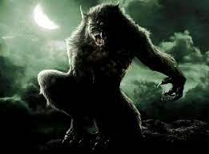

Jack l'Éventreur est le surnom donné à un tueur en série ayant sévi dans le district londonien de Whitechapel en 1888.
La Légende de Sleepy Hollow (titre original : The Legend of Sleepy Hollow), aussi connue sous les titres La Légende du cavalier sans tête ou La Légende du Val dormant, est une nouvelle de Washington Irving contenue dans le recueil Le Livre d'esquisses et publiée pour la première fois en 1820.
. La personne est forcée d'errer dans les campagnes sous une forme animale. Le sort peut être brisé si quelqu'un reconnaît la personne pendant sa métamorphose et réussit à prélever du sang à l'animal.
ce texte a un paragraphe"
la suite